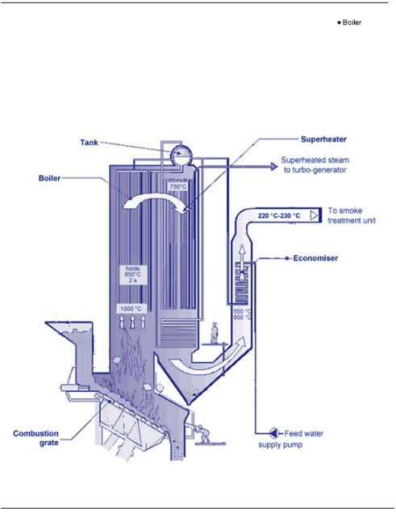
Fig. 1
La combustion des déchets dégage beaucoup de chaleur et les gaz de combustion atteignent une température de l’ordre de 1 000 °C. La réglementation environnementale ne permet pas de rejeter directement à l’atmosphère des gaz à haute température, et elle exige qu’ils soient au préalable refroidis. Deux principaux moyens sont utilisés :
La chaudière est un type d’échangeur de chaleur. Les échangeurs de chaleur sont des appareils qui permettent à des gaz ou à des liquides d’échanger leur chaleur à travers une paroi, sans avoir à entrer en contact direct.
Il existe des échangeurs permettant l’échange soit entre deux gaz, soit entre deux liquides ou soit entre un liquide et un gaz. Les chaudières appartiennent à ce dernier type. Dans une chaudière, la paroi ou surface d’échange est constituée par l’enveloppe extérieure d’une multitude de tubes en métal et le transfert s’effectue toujours du fluide chaud (gaz de combustion) vers le fluide froid (eau de chaudière).
L’intensité du transfert de chaleur augmente lorsque l’écart de température entre les deux fluides est plus grand. Il en sera de même si on augmente la surface d’échange.
Deux types de chaudières existent :
Dans les chaudières à tubes de fumées (ou de gaz de combustion), les tubes sont parcourus par les gaz de combustion et ils sont entourés d’eau. Elles sont rarement employées dans le domaine de l’incinération des déchets ménagers, car, étant donné leurs faibles sections, les tubes s’encrassent rapidement du côté des gaz de combustion et sont difficiles à nettoyer.
Dans les secondes, les tubes sont parcourus par l’eau et ces tubes sont installés sur le parcours des gaz de combustion et en périphérie de la zone de combustion.
Les chaudières à tubes d’eau sont les plus utilisées pour la production de vapeur en incinération.
La chaudière de récupération transfère la chaleur générée lors de la combustion des déchets à un fluide caloporteur. Ce fluide caloporteur peut prendre différentes formes :
vapeur surchaufféeDans une chaudière à vapeur surchauffée, la vapeur produite par la vaporisation de l’eau est dirigée vers une partie (échangeur) de la chaudière appelée surchauffeur. Cet échangeur est généralement en contact avec les gaz de combustion les plus chauds et il permet de chauffer la vapeur de 50 à 150 °C au-dessus de la température d’ébullition correspondant à la pression de la chaudière.
Eau surchaufféeL’eau est dite surchauffée quand elle est maintenue sous pression et à une température supérieure à 110 °C. Ainsi, les températures d’eau surchauffée sont couramment autour de 180 °C.
Vapeur saturéeLa vapeur est dite saturée quand elle provient de la vaporisation simple de l’eau. Les conditions de vapeur saturée sont couramment de 20 bars.
La circulation de l’eau dans la chaudière répond à deux nécessités :
Trois types d'écoulement d'eau existent :
Les deux dernières, qui mettent en jeu des pompes ne sont pas détaillées dans ce module car elles ne sont pas utilisées dans nos usines.
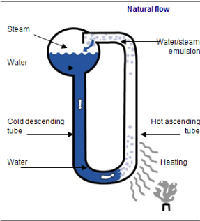
Fig. 2
La circulation dans les tubes de la chaudière est dite naturelle parce qu’elle s’établit d’elle-même par le jeu des différences de densité entre l’eau qui descend du ballon et l’émulsion(mélange d’eau et de vapeur) qui monte au ballon : l’eau est plus lourde que l’émulsion.
Cet effet est proportionnel à :
Cette circulation naturelle a l’avantage d’être autorégulante c’est-à-dire que l’eau circule d’autant mieux que les tubes sont chauffés, ce qui permet d’accélérer leur refroidissement.
Les tubes ascendants débouchent sur le ballon de chaudière dans une partie qui permet la séparation de l’eau et de la vapeur de l’émulsion.
Parmi les chaudières à tubes d’eau, il existe les chaudières horizontales et les chaudières.
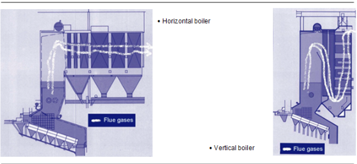
Fig. 3
| Type de chaudière | Caractéristiques |
|---|---|
| Horizontale | Meilleur accès, nettoyage et maintenance facilités |
| Verticale | Plus compacte, plus économique |
Fig. 4
Mode de support structuralLors de l’échauffement de la chaudière, il y a dilatation. Cette expansion de la structure dans les trois dimensions est de l’ordre de 1 mm par 100 °C et par mètre de tube de la structure de la chaudière, d’où l’importance du supportage qui prend en compte cette dilatation qui, au total, peut en effet représenter plusieurs centimètres.
Il existe deux technologies de supportage des chaudières :
La chaudière se compose de plusieurs éléments échangeurs de chaleur : économiseur, évaporateur et surchauffeur. Ces éléments sont réunis dans un même ensemble car ils communiquent avec le ballon supérieur, lieu d’arrivée de l’eau à vaporiser et lieu de départ de la vapeur vers le surchauffeur.
Le ballon a la forme d’un large cylindre horizontale disposé au sommet de la chaudière. Il reçoit l’eau en provenance de la pompe d’alimentation et assure une irrigation constante des tubes au contact des gaz de combustion. Il recueille la vapeur dont il assure une séparation complète de l’eau avant de diriger celle-ci vers le surchauffeur.
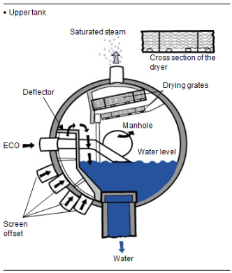
Fig. 5
Le ballon, muni de porte d’acier (trou d’homme) pour inspection, est équipé des éléments suivants :
Il permet :
La séparation eau/vapeur doit être la meilleure possible afin :
Des séparateurs mettent à profit trois phénomènes physiques qui jouent sur la différence de densité entre l’eau et la vapeur (la vapeur est plus légère que l’eau) :
Ces échangeurs de chaleurs sont constitués de panneaux de tubes ailetés assemblés entre eux par soudure continue et formant une enceinte rigide, entièrement étanche aux gaz. Ces panneaux se trouvent tout autour du feu, constituant ainsi les parois du foyer. C’est pour cela qu’on les appelle aussi « tubes écrans », « tubes de parois », « murs membranes » ou « tubes d’eau ».
Ils récupèrent l’énergie calorifique directement par le rayonnement du feu. C’est pour cette raison qu’ils sont les plus gros récupérateurs d’énergie.
Remarque : Les autres échangeurs (économiseurs, évaporateurs, surchauffeurs) ne récupèrent que la chaleur des gaz de combustion.
En vaporisant l’eau ils permettent un refroidissement complet de toute l’enceinte du foyer, donc de maintenir la température du four autour de 1 000 °C. Cette température est importante à la fois pour éviter la surchauffe des gaz de combustion qui passeront dans les surchauffeurs, mais aussi de limiter la production de NOx (cf. module n° 10).
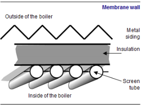
Fig. 6
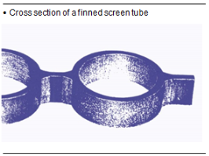
Fig. 7
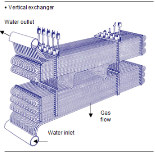
Fig. 8
Pour éviter la détérioration des tubes due à l’abrasion des cendres volantes et des flammes, on les recouvre sur quelques mètres au-dessus des grilles d’un béton réfractaire qui constitue une protection.
Les économiseurs sont les premiers à être parcourus par l’eau qui arrive des pompes alimentaires. Ils permettent de récupérer les dernières calories des gaz de combustion. Ils se trouvent donc en fin de parcours des gaz de combustion, en sortie de chaudière.
Ils préchauffent en quelque sorte l’eau avant qu’elle rentre dans le ballon de chaudière.
Lorsque la chaudière est propre, les gaz de combustion ont une température de l’ordre de 200 à 220 °C. Lorsque la chaudière s’encrasse cette température augmente d’environ 50 °C.
Sur certaines chaudières, en plus des murs membranes, il y a des panneaux de tubes évaporateurs dans le parcours des gaz de combustion. Ils se présentent comme les économiseurs. Ces échangeurs permettent la vaporisation de l’eau. L’eau qui rentre dans les évaporateurs vient du ballon de chaudière. Dans ces tubes se retrouve une émulsion eau/vapeur contenant jusqu’à 20%
La vapeur recueillie au ballon et séparée de l’eau est dirigée vers les surchauffeurs dans le but de passer la vapeur de l’état saturée à l’état surchauffée en augmentant sa température.
À la sortie, la vapeur est « sèche ». Dans de nombreux cas, les surchauffeurs augmentent la température de vapeur de 50 à 150 °C. Ils ressemblent aussi aux économiseurs.
Les surchauffeurs sont les premiers échangeurs parcourus par les gaz de combustion, donc ils sont réchauffés par les gaz les plus chauds. Pour éviter la fusion des cendres volantes contenues dans ces gaz, il ne faut pas qu’ils soient en contact avec des gaz à plus de 750 °C.
Ils permettent d’ajouter de l’eau liquide à la vapeur surchauffée qui serait à une température trop élevée. Cet ajout permet d’abaisser la température de la vapeur, donc de contrôler les caractéristiques et la température de la vapeur transmise vers les points d’utilisation.
Ces éléments sont les organes de sécurité ultimes dans le cas où la conduite de l’installation thermique n’a pas été maîtrisée correctement et où la pression s’est élevée au-dessus du niveau recommandé par le constructeur.
Deux soupapes (une de secours, au cas où la première ne fonctionnerait pas) sont placées sur le ballon de vapeur en haut de la chaudière.
Leur rôle est de protéger la chaudière contre les surpressions et d’éviter ainsi les ruptures de canalisations. Lorsque la pression devient trop importante dans la chaudière, les soupapes s’ouvrent et laissent passer le surplus de vapeur. La pression diminue alors dans la chaudière.
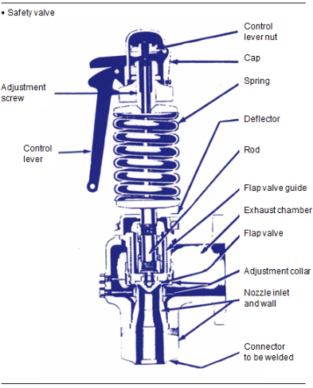
Fig. 9
Les évents sont situés au point haut de la chaudière. L’évent peut être obturé par une vanne. Lors du démarrage à froid, la vanne est ouverte et l’eau de la chaudière est soumise à la pression atmosphérique.
Lors de la montée en température de la chaudière, l’eau se dilate et la pression dans la chaudière augmente, ce qui permet le dégazage. Dès que la température de l’eau est supérieure à 100 °C et la pression supérieure à 4 bars, l’évent est obturé. La production de vapeur est amorcée.
Le ramonage élimine les dépôts (poussières et cendres collantes provenant des gaz de combustion) sur les échangeurs et les parois de la chaudière. Il garantit le fonctionnement optimal de la chaudière en maintenant les surfaces d’échange aussi propres que possible. En effet les dépôts empêchent la transmission de la chaleur depuis les gaz de combustion vers l’eau ou la vapeur car ils constituent une couche isolante. Ils diminuent :
On notera que si le ramonage n’est pas effectué de manière régulière, la formation des dépôts augmente très rapidement en fonction du temps et devient incontrôlable, au point d’obturer totalement le circuit des gaz de combustion.
Le ramonage est effectué selon des cycles définis d’après la durée de fonctionnement de la chaudière. La fréquence de ramonage dépend du type de chaudière (horizontale ou verticale), du type d’échangeur et de la longueur de parcours des gaz de combustion.
On distingue plusieurs procédés de ramonage :
Les rampes sont composées de tubes percés. Selon le procédé choisi, elles sont alimentées par de l’air comprimé ou par de la vapeur surchauffée. Elles peuvent être animées d’un mouvement de rotation qui permet d’atteindre toutes les zones à nettoyer. Les rampes sont rétractables dans les endroits où les températures sont élevées, supérieures à 400 °C.
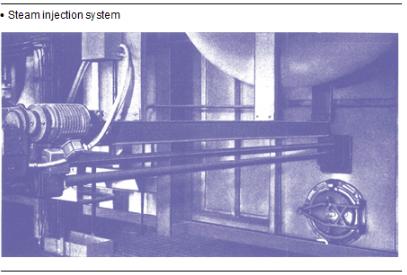
Fig. 10
Le grenaillageLe procédé consiste à envoyer (chute par gravité) des billes métalliques de faible dimension, d’environ 5 mm de diamètre, par-dessus les échangeurs à nettoyer. Les chocs provoqués par ces billes sur les dépôts provoquent leur décrochement de la surface de l’échangeur. Les dépôts et les billes sont alors captés par le bas. Les billes sont triées et sont réemployées pour un nouveau cycle de nettoyage.
Le frappageLe procédé consiste à transmettre une vibration aux tubes des échangeurs ; celle-ci provoque le décollement des dépôts. La vibration est produite par frappage des supports des échangeurs à l’aide de marteaux métalliques. Ce système se retrouve sur les chaudières horizontales.
Le circuit eau/vapeur est un circuit parfois fermé, parfois ouvert. Dans un circuit ouvert, la vapeur est transmise à un point d’utilisation et la vapeur condensée, après récupération d’énergie, n’est pas retournée vers la chaudière. C’est un système moins efficace car il y a perte de chaleur contenue dans les condensats (vapeur condensée) et une consommation importante d’eau qu’il faudra traiter.
Dans un circuit fermé, le condensat est recirculé pour être transformé à nouveau en vapeur. Il y a toujours de légères pertes, de l’ordre de 2,5%
Le circuit eau/vapeur permet la récupération et le transport de l’énergie.
L’eau provient d’une station de production d’eau et elle est envoyée en bâche alimentaire en passant par la tour de dégazage. De la bâche alimentaire, elle est pompée par les pompes alimentaires qui l’envoient vers les chaudières. L’eau passe par l’économiseur avant d’arriver au ballon.
La chaudière est l’ensemble d’éléments qui permettent la récupération de la chaleur dégagée par la combustion. C’est l’arrangement des différents éléments qui fait son efficacité.
Le dernier surchauffeur est raccordé au collecteur dit « clarinette » haute pression. La vapeur quitte le collecteur haute pression pour se diriger vers le turboalternateur ou vers l’échangeur de chauffage du réseau.
Contrairement à l’échangeur de chauffage réseau, le turboalternateur ne condense pas la vapeur, il ne fait que réduire sa pression et sa température. Il transforme cette énergie calorifique en énergie mécanique (rotation de l’arbre de turbine). Pour réutiliser la vapeur dans le cycle, il faut la condenser, ce qui sera effectué par le condenseur.
Pour augmenter l’efficacité du turboalternateur, il faut chercher à utiliser toute la pression disponible, c’est-à-dire obtenir une pression très basse en sortie de turbine. En fait, cette pression est maintenue sous la pression atmosphérique, ce qui explique que malgré une température inférieure à 100 °C à ce point, l’eau est toujours sous forme de vapeur.
En cas de dysfonctionnement du turboalternateur, la chaudière doit pouvoir continuer à assurer son rôle de refroidissement des gaz de combustion. On peut alors contourner la turbine et envoyer la vapeur directement vers le condenseur.
Certains turboalternateurs permettent d’extraire une partie de la vapeur à une pression intermédiaire entre la pression d’entrée et de sortie. Cette vapeur est dirigée vers un collecteur moyenne pression pour être utilisée dans le procédé.
On constate bien, grâce à cette description, que l’énergie des OM est récupérée par la chaudière et ressort de l’usine soit directement sous forme de chaleur dans la vapeur, soit sous forme d’électricité grâce au groupe turboalternateur (turbine/alternateur) qui transforme cette chaleur en électricité.
La bâche alimentaire est le réservoir qui permet d’alimenter en eau les chaudières. Elle est elle-même alimentée par l’eau venant des condensats de la vapeur et par l’apport continu d’eau déminéralisée dont la quantité doit compenser les pertes de condensats. Elle est surmontée d’une bâche dégazante qui extrait les gaz dissous de l’eau, notamment l’oxygène et le dioxyde de carbone, en faisant circuler un peu de vapeur au travers de l’eau retournant à la bâche.
Ces gaz sont nuisibles à la chaudière car ils provoquent respectivement de la corrosion et de l’entartrage.
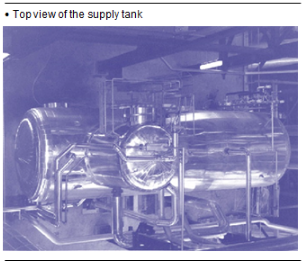
Fig. 11
Le parcours de l’eau est le suivant : l’eau sort de la bâche alimentaire en étant aspirée par les pompes alimentaires qui dirigent l’eau vers les économiseurs. Elle passe dans l’évaporateur après avoir transitée dans le ballon de chaudière, puis la vapeur recueillie au ballon passe dans les surchauffeurs. La chaudière se compose de différents faisceaux de tubes qui permettent un échange de chaleur entre l’eau et les gaz de combustion :
Il y a toujours au moins un ballon supérieur de chaudière par chaudière, et dans certains cas il y a un ballon inférieur.
Ce sont des cylindres munis de multiples brides par où entre ou sort la vapeur. Il y a souvent des clarinettes ou collecteurs, distincts des vapeurs haute pression et moyenne pression. Elles collectent et redistribuent dans toute l’usine ces deux types de vapeurs, notamment à la turbine, aux réchauffeurs, au dégazeur, etc.
Elle transforme l’énergie de la vapeur en énergie mécanique (mouvement). L’élément particulier de la turbine est son régulateur de débit de vapeur, piloté par un automate. Il est constitué par un jeu de cames qui, selon leur ouverture, permettent l’entrée dans la turbine d’un débit très précis de vapeur.
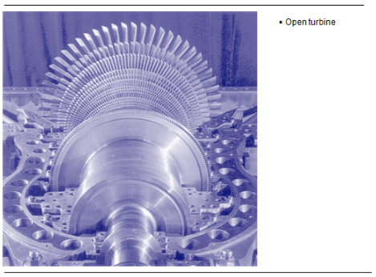
Fig. 12
Les condenseurs permettent de transformer la vapeur en eau liquide. Cet organe du circuit réalise la transformation inverse à la chaudière. Il extrait l’énergie excédentaire pour réutiliser à nouveau l’eau dans le cycle de la chaudière.
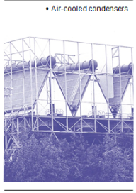
Fig. 13
Il en existe différents types :
Dans les autres cas, la vapeur peut être condensée dans un réseau de chauffage ou chez un industriel qui utilise la vapeur. Sur la plupart des sites, nous avons des aérocondenseurs.
Ils sont constitués d’un grand nombre de tubes ailetés où l’eau se condense à l’intérieur. Un flux d’air est dirigé sur les ailettes par convection. Pour améliorer leur efficacité, la convection est assistée par des ventilateurs hélicoïdes qui tournent à faible vitesse. La pression de condensation est contrôlée en faisant varier le débit d’air, soit par des moteurs de ventilateurs à vitesse variable, soit, pour les installations anciennes, en faisant varier l’angle d’inclinaison des pales de ventilateur. De plus, un système de ventels offre la possibilité de diminuer la convection en empêchant l’air ambiant de refroidir les tubes.
En hiver, ce système permet de ne pas geler l’eau à l’intérieur des tubes.
Ainsi la régulation de température des condensats se fait grâce aux aérocondenseurs, par la vitesse de rotation des ventilateurs, par la pression absolue dans les tubes et par le degré d’ouverture des ventels.
La bâche à condensat est en quelque sorte une petite bâche alimentaire. Elle collecte les condensats de la vapeur condensée en sortie de condenseur.
Dans le circuit de l’installation de production d’énergie, il y a plusieurs pompes centrifuges multicellulaires :
Autour des échanges thermiques principaux dans la chaudière pour fabriquer la vapeur, il y a d’autres échanges qui augmentent le rendement. Ils sont réalisés par des échangeurs à tubes ; les principaux sont les réchauffeurs d’air primaire et les réchauffeurs d’air secondaire qui permettent de réchauffer l’air de combustion.
Au niveau de la chaudière, il peut y avoir des phénomènes de corrosion et d’érosion des tubes d’acier qui la composent, c’est-à-dire une attaque chimique et une usure des aciers. Cette attaque est présente des deux côtés des surfaces d’échange, du côté du circuit d’eau et du côté du circuit des gaz de combustion.
Ce thème fera l’objet du module 14. Du côté du circuit d’eau, la corrosion est fortement liée à la présence d’oxygène. Cette corrosion est peu active, le traitement d’eau permettant en effet l’élimination de l’oxygène par ajout d’hydrazine dans l’eau au niveau du dégazeur.
En revanche, du côté des gaz de combustion, l’attaque chimique des matériaux de la chaudière est très importante. Les gaz de combustion contiennent des éléments qui sont fortement corrosifs : le chlore, le soufre, l’oxygène.
Cette corrosion est très accentuée dans le foyer du four où les gaz sont extrêmement chauds. De plus, les cendres volantes en fusion circulant à grande vitesse (de l’ordre de 6 à 10 m/s) dans le circuit des gaz de combustion érodent les réfractaires et les aciers de la chaudière.
On veillera donc à ne pas dépasser la charge maximale de la chaudière. Si la quantité de déchets ménagers brûlés est trop importante, la quantité et les vitesses de circulation de gaz de combustion à évacuer seront importantes, ainsi que le phénomène d’érosion.
On surveillera aussi la position du feu. Les flammes ne doivent pas entrer en contact avec les tubes écrans, sous peine d’augmenter la corrosion des tubes.
On appelle coup de bélier une augmentation soudaine de la pression (les coups de bélier sont parfois appelés coups de pression). Ces augmentations de pression qui se déplacent à grande vitesse peuvent provoquer des déformations du matériel ou des supports, voire la destruction du matériel. Ces coups de bélier peuvent être d’origine hydraulique ou thermique.
Origine hydrauliqueLors du sectionnement de la canalisation (fermeture d’un organe de régulation rapide ou d’un robinet d’isolement à déplacement rapide), la pression dynamique qui engendrait la vitesse se transforme en pression statique, amenant de ce fait une surpression avant l’organe d’isolement.
Après l’organe d’isolement, la vitesse du fluide engendre une dépression car le fluide est emporté par son élan (dû à la composée de sa masse et de sa vitesse), puis rebondit, aspirée vers l’opercule par cette dépression. Ces phénomènes conjoints sont d’autant plus importants que la fermeture de la vanne est rapide, que la vitesse du fluide est importante et que la masse du fluide est importante.
Dans le cas des installations à vapeur, les vitesses sont relativement élevées et les masses relativement faibles ; dans le cas de l’eau, la vitesse est en général relativement faible, mais les masses en mouvement sont élevées.
Causes thermiquesLes coups de béliers thermiques sont dus au mélange de deux fluides qui n’ont pas les mêmes caractéristiques thermiques. C’est le cas de la vapeur et du condensat qui n’ont pas les mêmes vitesses de changement de température. Ces coups de béliers thermiques sont alors dus :
Le métal composant les chaudières s’use sous l’effet de la corrosion et de l’érosion. Les parties les plus sensibles à ces phénomènes sont situées au-dessus de la zone de combustion, au niveau du surchauffeur et de l’économiseur.
On peut estimer que l’épaisseur des canalisations diminue dans certains cas de 1 mm et plus tous les cinq ans. Pour limiter l’érosion, les tubes les plus exposés sont protégés par une coquille.
Pour suivre l’évolution de cette usure, on effectue alors des contrôles non destructifs de mesure d’épaisseur qui aident à établir la fréquence de remplacement des canalisations avant leur rupture.
On peut utiliser la vapeur pour le chauffage des locaux, pour la transformation de la pâte en papier, pour le chauffage de l’eau de lavage des blanchisseries, pour actionner des machines, des turbines… En un mot, pour des milliers d’applications dans toutes les branches de l’industrie.
L’incinération des ordures ménagères permet de réduire significativement la masse et le volume des OM. Cette technique d’élimination produit de la chaleur qui peut-être récupérée ; on parle dans ce cas de valorisation thermique des déchets.
En fait, nous ne produisons pas d’énergie, mais nous transformons une forme en une autre. Ainsi en brûlant de la matière, il y a dégagement d’énergie sous forme de chaleur. Pour en récupérer le maximum, nous utilisons des échangeurs de chaleurs. Le plus souvent, ce sont des tubes métalliques qui permettent à deux fluides d’échanger de la chaleur. Par exemple dans une cocotte-minute, l’eau récupère la chaleur de la flamme de la gazinière grâce à ses parois métalliques qui transfèrent l’énergie.
Dans le cas de l’usine, la cocotte-minute ressemble à notre chaudière, la gazinière est l’ensemble de nos grilles, et le gaz est remplacé par les OM qui brûlent. Notre usine produit donc de la chaleur stockée par de l’eau ou de la vapeur, le « fluide caloporteur » (transporteur de chaleur). Avec ce fluide, il est possible de réchauffer des habitations ou de produire du mouvement grâce à une turbine qui est un moulin à eau très perfectionné. Nous pouvons donc considérer que la chaudière est l’élément central de notre usine à chaleur.
Il existe de nombreuses possibilités d’utiliser l’énergie thermique. Les cas les plus fréquents sont :
La chaleur peut être vendue sous forme de vapeur à un industriel implanté à proximité de l’usine ou vendue sous forme d’énergie thermique à la centrale thermique d’un chauffage urbain. L’énergie produite par les déchets vient ainsi se substituer à des combustibles plus traditionnels comme le fioul ou le gaz naturel.
Lorsqu’il y a vente de chaleur, il peut se passer deux phénomènes principaux qui mettent en jeu deux types de chaleurs : la chaleur sensible et la chaleur latente.
La première est dite sensible parce qu’elle se ressent par un changement de température. Ainsi une quantité de chaleur peut permettre d’élever la température d’un corps (l’eau, par exemple, de 20 °C à 90 °C, et avec un peu plus de chaleur on aurait pu obtenir une eau plus chaude).
La chaleur latente (voir index), elle, ne produit pas de changement de température mais un changement d’état : si on apporte de la chaleur à de la glace, la glace change d’état et se transforme en eau liquide, sans pour autant qu’il y ait d’élévation de la température. Toute la chaleur a servi à transformer la glace en eau. C’est une fois que toute la glace a fondu que l’eau peut s’élever en température.
Les changements d’état possibles sont :
La chaleur latente est toujours plus grande que la chaleur sensible. En conséquence, le moyen de vendre le plus de chaleur est de fournir de la vapeur et de récupérer de l’eau. Ainsi on aura vendu de la chaleur sensible et, surtout, de la chaleur latente, alors que si on vend de la vapeur et que l’on récupère de la vapeur moins chaude, on n’aura vendu que de la chaleur sensible.
Pour vendre les deux types de chaleur, il faut condenser la vapeur en eau dans un échangeur ou un condenseur chez l’industriel, ou dans l’échangeur de chauffage du réseau de chauffage.
Les deux types de chaleur que nous venons de voir sont aussi appelés enthalpie dont la grandeur est une énergie par unité de masse. Pour l’eau par exemple, c’est l’énergie contenue dans un kilo de cette eau à une température et une pression données.
Dans ce type d’installation, une partie de l’énergie thermique disponible est transformée en énergie électrique dans le groupe turboalternateur.
Les turbines utilisées dans nos usines fonctionnent avec de la vapeur. Cette vapeur permet de faire tourner un arbre, qui lui même fait tourner un alternateur, une grosse dynamo, producteur de l’électricité.
À l’entrée de la turbine, la vapeur est chaude et a une forte pression. Cette vapeur en sortant s’est refroidie et a perdu beaucoup de pression. En fait, plus la différence sera grande entre l’entrée et la sortie, plus le turboalternateur produira de l’électricité.
Il ne faut avoir en sortie de turbine que de la vapeur pour éviter qu’elle ne s’abîme, donc il ne faut pas que la vapeur change d’état en se condensant. Nous en déduisons que la seule chaleur récupérée par la turbine est une chaleur sensible. Pour en récupérer le maximum, en sortie de turbine la température est autour de 60 °C pour une pression proche de 0,15 bar, où l’eau est encore à l’état de vapeur.
Pour que le cycle puisse être bouclé, il faut condenser la vapeur en eau, et c’est lors de cette condensation que la chaleur latente est libérée. Or si elle est libérée à l’atmosphère par les aérocondenseurs, cette chaleur est perdue pour l’usine.
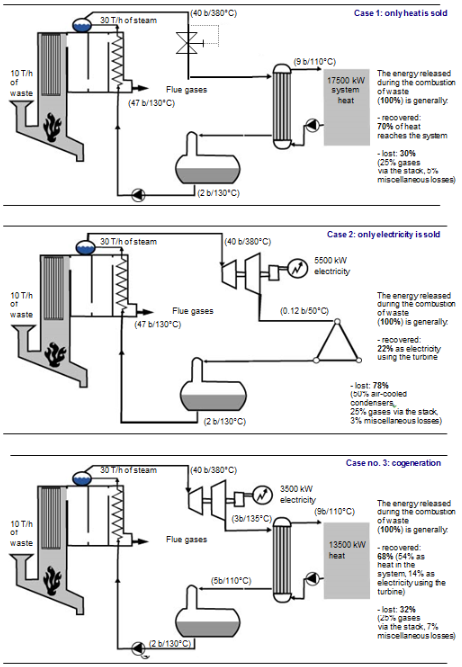
Fig. 14
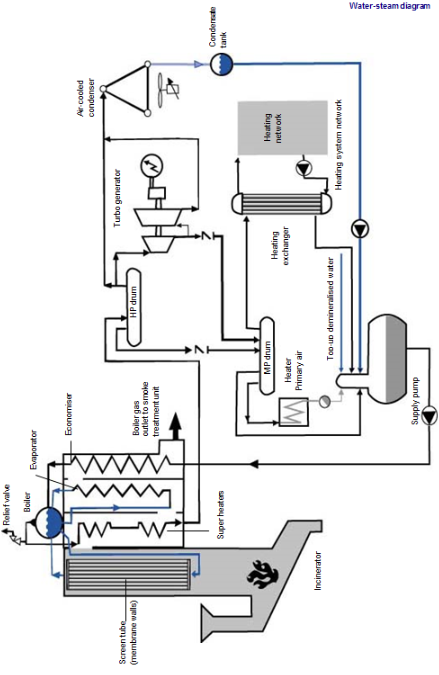
Fig. 15
Ce type de production, combinant les deux cas précédents, est aussi appelé cogénération. Il permet de diversifier l’offre du type d’énergie vendue. L’exploitant a donc une plus grande liberté de manœuvre, car, en cas de baisse de la vente de chaleur, il peut augmenter la production d’électricité.
Dans les trois cas, le four fonctionne à 10 t/h avec un PCI 2 200 kcal/kg, sans réchauffeur d'air, turbine avec soutirage à 6 bars et réseau chaleur 12 MW à 110 °C. La chaudière fournit approximativement 30 t/h de vapeur. Dans chacun des trois cas d’utilisation de la vapeur, les schémas montrent les différentes valeurs de pressions, température, et de débit en plusieurs points principaux. Dans vos usines, les valeurs de ces paramètres peuvent être différentes.
Le schéma de la page suivante montre le cheminement du circuit eau-vapeur depuis la bâche alimentaire, vers la chaudière, vers le turbo alternateur, vers l’aérocondenseur, et enfin vers le réseau de chauffage.
blue{Chaleur latente}
DéfinitionLa quantité d'énergie fournie pour changer la phase d'un corps, par exemple convertir un liquide en vapeur.
La transformation peut être réversible, c'est-à-dire que l'eau sous forme de vapeur peut être condensée en phase liquide. Dans ce cas, de la chaleur latente est libérée lors de cette transformation.
Heat unitsDifférentes unités existent :
La quantité d'énergie nécessaire pour vaporiser l'eau sous pression dépend de :
Le tableau suivant donne les températures d'ébullition et la chaleur latente à diverses pressions. Sur cette base, à 42 bars, la température d'ébullition est de 255 °C et la chaleur latente de vaporisation pour 1 kg d'eau est égale à 470 Wh.
| Pression relative (bar) | Temp. d'ébullition (°C) | Chaleur latente (Wh/kg) |
|---|---|---|
| 0 | 100 | 627 |
| 10 | 184 | 556 |
| 42 | 255 | 470 |
Fig. 16
Sur cette base, nous pouvons définir la chaleur latente de vaporisation de toute masse d'eau à diverses pressions. Chaleur latente = masse d'eau x chaleur latente pour 1 kg Wh kg Wh/kg
ApplicationAfin de vaporiser 14 tonnes de vapeur à une pression de 42 bars, le la chaleur latente nécessaire est égale à :
14 000 x 470 = 6 580 000 Wh soit 6 580 kWh
ExerciceCalculez la chaleur latente nécessaire pour vaporiser 10 tonnes de vapeur à une pression de 10 bars .
blue{Changements de phase}
Les différentes phases L'eau peut se trouver sous différentes formes ou phases :Noms des différents changements de phase :
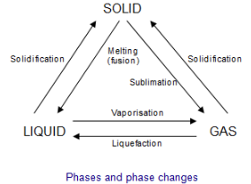
Fig. 17
Par exemple, lorsqu'un solide devient liquide, ce changement est connu sous le nom de fusion ou fusion.
De la chaleur latente est requise ou libérée pour chaque changement de phase
température de vaporisationCes changements de phase se produisent à pression et température constantes. Ainsi, lorsque l'eau est vaporisée à pression atmosphérique par chauffage, la température reste constante et égale à 100 [°C] pendant le changement de phase.
Cette température est connue sous le nom de température d'ébullition ou d'évaporation ; l'eau commence à bouillir à 100 [°C] à pression atmosphérique. En fait, la chaleur fournie (chaleur latente) n'est utilisée que pour la transformation.
La température d'évaporation dépend de la pression. Plus la pression est élevée, plus la température d'ébullition est élevée. Sur cette base, à une pression absolue de 43 bars (42 bars relatifs), la température d'ébullition est égale à 255 [°C].